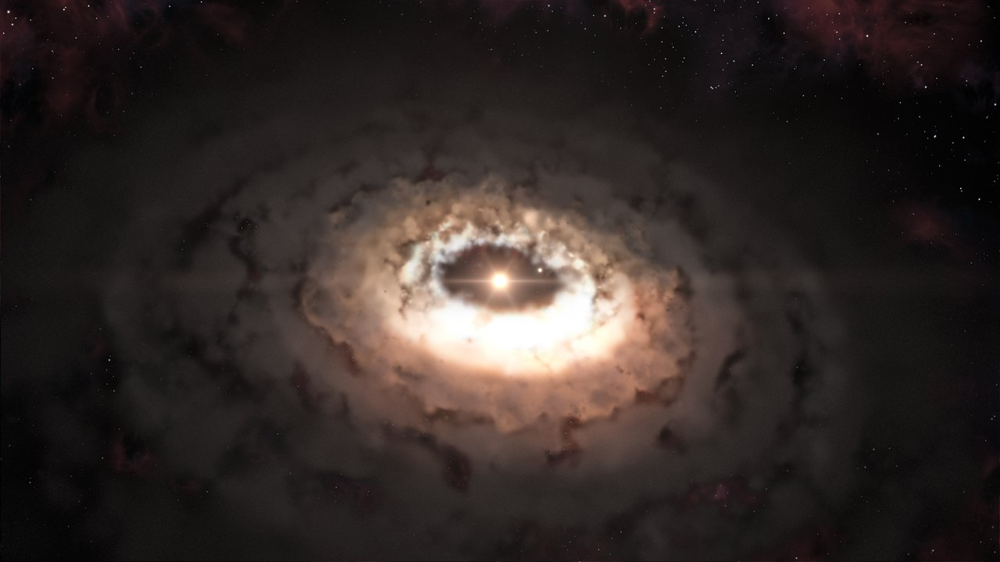
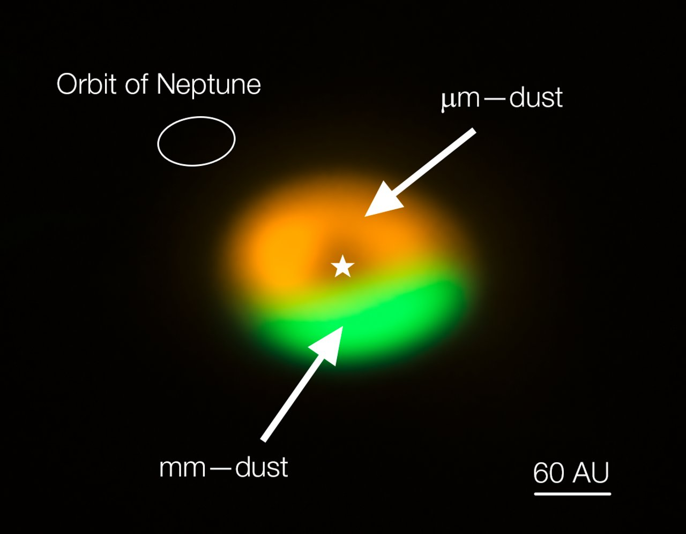

Credit: ESO/L. Calçada
Recent surveys have shown an overwhelming diversity of extrasolar planetary
systems, prompting the question of how did they form, and whether some may end up looking
like our own and being able to sustain
life. Hints to answer such fundamental questions may be hidden in the many trends that
are slowly emerging from the data. An example are the deserts and peaks in the
distribution of giant exoplanets, with clear implications for habitability
of systems, given the role played by giants on the delivery of volatiles to terrestrial
planets (e.g., Quintana & Lissauer 2014). The environment in which planets form plays a
major role in understanding both the variety of exoplanets
and the emerging trends. Planets are born out of the dust and gas left over whenever a
new star forms: the protoplanetary disk. The initial conditions for planet formation are
thus determined by the protoplanetary disks, which evolve
and disperse as they give birth to planets.

ALMA (ESO/NAOJ/NRAO)/Nienke van der Marel
TDs are only now really becoming spatially resolvable thanks to facilities like
ALMA and VLT - SPHERE, making their study a timely and urgent task. Only understanding
the disk evolution and the planet-disk
interactions allow the large body of existing and planned observations to be exploited to
answer more complex questions like the formation of planetary systems capable to host
life. This requires a focussed effort from several communities
to devise a multi-pronged strategy to approach to tackle the problem. Specifically,
multiwavelength observations of disks at different stages of evolution together with
exoplanet and disk statistics should be used to constrain a concerted
theoretical modelling effort including the hydrodynamics of the dust and gas component of
disks, with and without planets, joint to chemical and radiative transfer calculations,
particularly of the surface layers and winds of disks
in (or just before) the transition phase. This is the motivation for the Research Unit.